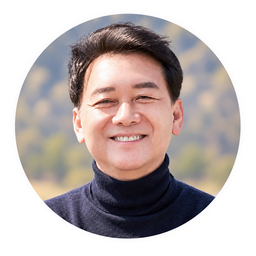
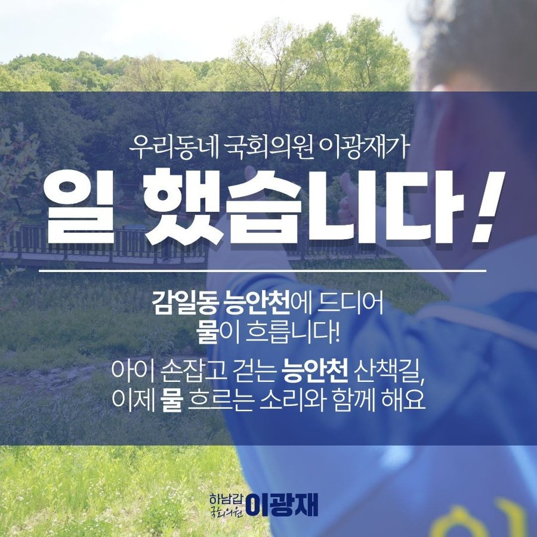
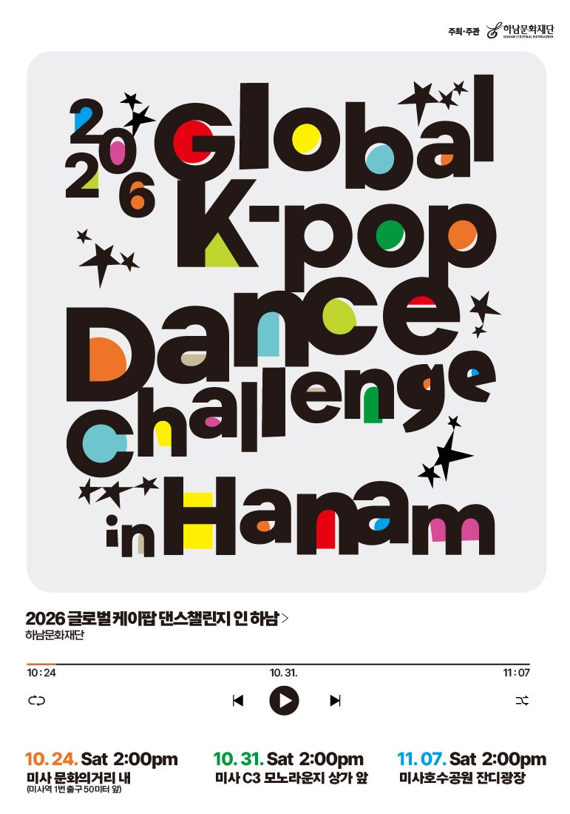
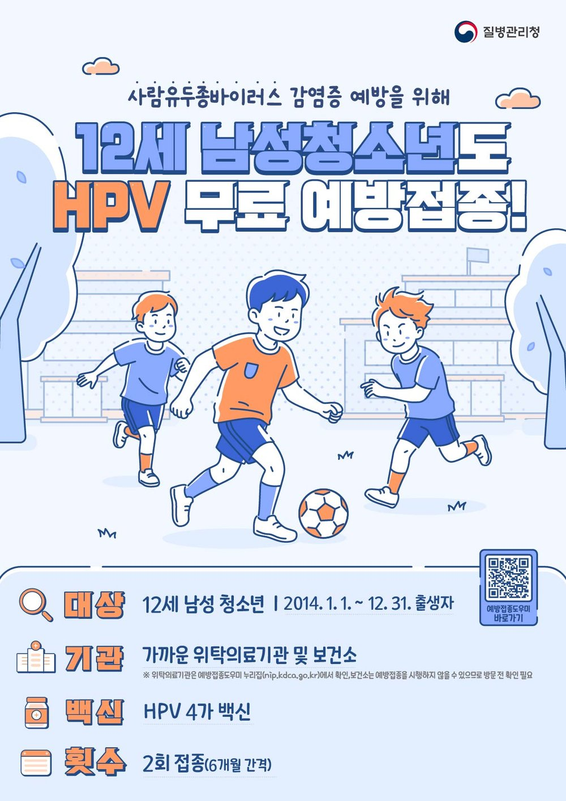
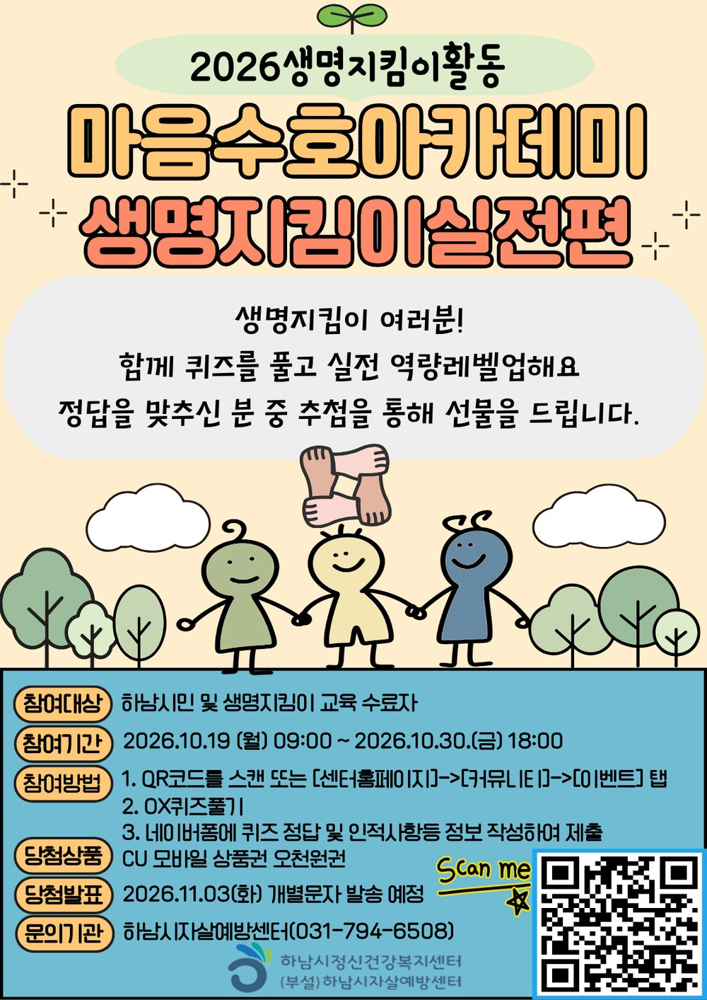

62호 | 2026년 10월 21일 발행
📌 이번 호 주요 목차

우리동네 국회의원 이광재📝 현장일지
이광재의원, 감일동 능안천에 드디어 물이 흐릅니다
• 감일신도시 능안천·벌말천 하천 유지용수 공급 길 열려
• '공급 어렵다'던 한국수자원공사, 9월 협의서 조건부 공급 가능으로 선회
• 두 하천에 하루 5,000㎥씩 총 1만㎥ 공급 목표, LH 공급시설 공사 10월 7일 완료
• 댐용수 사용 신청 등 남은 행정절차 진행 중
• 이현재 시장 "하남시·이광재 국회의원·주민이 협업해 이룬 성과"
• '공급 어렵다'던 한국수자원공사, 9월 협의서 조건부 공급 가능으로 선회
• 두 하천에 하루 5,000㎥씩 총 1만㎥ 공급 목표, LH 공급시설 공사 10월 7일 완료
• 댐용수 사용 신청 등 남은 행정절차 진행 중
• 이현재 시장 "하남시·이광재 국회의원·주민이 협업해 이룬 성과"

📌 출처: 이광재 공식 네이버 블로그
📝 현장일지
이광재의원 "나라도 돈을 굴려야 합니다" 국정감사서 국부펀드 점검
• 국정감사서 수출입은행·한국투자공사(KIC)·한미전략투자공사 차례로 점검
• 20년 전 '사금고' 소리 듣던 국부펀드 KIC, 최근 10년 연평균 7% 넘는 수익
• 국가 재정·공공자산을 한 화면에 모아 AI로 분석하는 시스템 구축 제안
• 한미전략투자, '바이 아메리카' 예외·한국산 기자재 장기 구매계약 확보 주문
• 수출입은행 정책금융 용도 점검 — 대출·보증 내역과 심사 절차 자료 요구
• 20년 전 '사금고' 소리 듣던 국부펀드 KIC, 최근 10년 연평균 7% 넘는 수익
• 국가 재정·공공자산을 한 화면에 모아 AI로 분석하는 시스템 구축 제안
• 한미전략투자, '바이 아메리카' 예외·한국산 기자재 장기 구매계약 확보 주문
• 수출입은행 정책금융 용도 점검 — 대출·보증 내역과 심사 절차 자료 요구
📌 출처: 이광재 공식 네이버 블로그
📰 언론보도
[이데일리] 이광재의원 "글로벌 국부펀드와 협력해야"… KIC에 공동투자 확대 주문
이광재 의원이 20일 재정경제기획위원회 국정감사에서 한국투자공사(KIC)에 글로벌 국부펀드와의 협력을 주문했습니다. 이 의원은 모태펀드·국민성장펀드·KIC·한미전략투자공사·국민연금이 국민의 부를 늘리는 포트폴리오인 만큼 기관 간 유기적 연계가 중요하고, 국내 자본만으로는 2단계 도약이 어렵다고 강조했습니다. 박일영 KIC 사장은 싱가포르투자청(GIC)과는 공동투자가 많고 테마섹과는 일부 사례가 있다고 답했습니다.
📌 출처: 이데일리 (김성수 기자)
📰 하남 지역 주요 뉴스
🌿 환경/생활
하남시, 감일신도시 능안천·벌말천 용수 공급 '돌파구'… 하루 1만㎥ 목표
하남시가 감일신도시 능안천·벌말천의 하천 유지용수 공급 문제 해결에 속도를 내고 있습니다. 두 하천은 신도시와 함께 정비됐지만 물이 부족해 주민 요구가 이어져 왔습니다. 시는 하루 1만㎥ 공급을 목표로 지난해 6월부터 한국수자원공사와 협의하며 댐용수 계약량 조정, 지하수·하수처리수 재활용 대책을 제시해 9월 14일 조건부 공급 가능 의견을 받았습니다. LH는 7일 공급시설 공사를 마쳤고, 이현재 시장은 이광재 국회의원·주민과 협업한 성과라고 밝혔습니다.
📌 출처: 문화일보 (박성훈 기자)
🏠 주거/부동산
감일포엠포레 617세대, 2027년 상반기 분양전환 채비… 금강펜테리움은 10월 말 감정평가 요청 전망
10년 공공임대 감일포엠포레(617세대)가 2027년 상반기 조기 분양전환에 들어설 전망입니다. 하남시는 19일 시의회 행정사무감사에서 LH가 리츠 수익방식을 임대에서 분양으로 바꾸는 절차를 밟고 있어 내년 상반기 전환 조건을 갖출 것으로 내다봤습니다. 10년 임대 167세대의 감일금강펜테리움 센트럴파크는 8월 조기 전환 시기가 도래해 10월 말 감정평가 요청이 예상됩니다. 미사·감일 4개 단지는 계약이 진행 중이고, 미사강변 4개 단지 3,219세대는 계약을 마쳤습니다.
📌 출처: 시티뉴스
💬 하남 맘카페 HOT 이슈
이번 주 하남 지역 맘카페(미사맘스클럽, 하남교산맘, 정다운 감일맘, 아이품애 등)에서 많이 오르내린 HOT 이슈 TOP 3입니다.
1️⃣ [주거] "교산 분양, 하남시민 몫 늘려야"… 우선공급 30%→50% 상향 요구에 관심 집중
현황: 교산신도시 공공분양에서 하남시 거주자에게 우선 배정하는 비율을 현행 30%에서 50%로 높여야 한다는 소식이 교산 관련 카페마다 공유됐습니다. 조창민 하남시의원이 17일 시의회에서 경기도·국토교통부에 공급 기준 개선을 촉구했고, 이현재 하남시장도 앞서 기자회견에서 같은 요구를 내놨습니다. 하남교산맘 카페에는 '오래 개발을 기다린 하남 시민에게 당첨 기회가 너무 적다'는 글이 이어졌고, 감북동 신도시 주민연합회에는 이광재 의원 간담회에서 하남 주민 40~45% 우선 배정을 요청 중이라는 소식이 올라왔습니다. 청약 카페에는 '하남 당해인데 신혼특공 11점·신생아특공 8점이면 기다릴 만한가' 같은 점수 상담 글도 많았습니다.
💡 주민 포인트: 우선공급 비율 상향은 제도 개정이 필요한 사안이라 실제 적용 여부는 지켜봐야 합니다. 교산지구 청약 일정과 자격은 LH 청약플러스 공고문에서 확인하세요.
💬 주민 반응: 오랜 기간 개발을 기다려 온 하남 시민에게 기회가 더 돌아가야 한다는 공감 속에, 비율이 바뀌면 청약 전략도 달라진다며 진행 상황을 지켜보자는 글이 많습니다.
📌 출처: 네이버 카페 (하남교산맘, 교산살래, 감북동 신도시 주민연합회, 내집장만 아카데미, 돈이 되는 부동산 정보)
2️⃣ [보육] "내년 유치원 어디 보내지?"… 2027학년도 유치원 입학 시즌, 설명회·병설 후기 공유
현황: 내년 유치원 입학 원서 접수를 앞두고 유치원 고민 글이 부쩍 늘었습니다. 미사맘스클럽에는 12월 미사 이사를 앞둔 22년생 학부모가 미사강변초 병설·미담·구산유치원 등을 비교하며 추천을 부탁했고, 미사강변 리슈빌 입주자 모임에는 '놀이 중심 교육과정이라 아이가 매일 콧노래 부르며 등원했다'는 망월초 병설유치원 후기가 올라왔습니다. 하남맘 모여라에는 '감일에 유치원이 몇 없는데 병설도 괜찮냐'는 질문이, 아이품애에는 다니던 어린이집 5세반이 갑자기 없어져 급히 유치원 입학설명회 일정을 찾는다는 글이 올라왔습니다. 위례 카페에는 입학전형 일정과 1~3지망 원서 작성 시 흔한 실수를 정리한 글이 공유됐습니다.
💡 주민 포인트: 유치원 입학 신청은 '처음학교로' 누리집에서 진행됩니다. 지망 순위는 경쟁률을 고려해 나눠 쓰는 것이 좋고, 사립유치원 설명회 일정은 각 유치원 공지를 확인하세요.
💬 주민 반응: 연령별 한 학급씩 운영되는 병설유치원에 대한 호평이 나온 반면, 감일 등 신도시는 유치원 선택지가 적다는 아쉬움이 나왔습니다.
📌 출처: 네이버 카페 (미사강변도시 미사맘스클럽, 미사강변 리슈빌 입주자 모임, 하남맘 모여라, 아이품애, 슬기로운 위례생활)
3️⃣ [건강] 찬바람에 독감 접종 문의 급증… "하남 60~64세는 올해부터 무료"
현황: 아침저녁 기온이 뚝 떨어지면서 독감 예방접종 정보를 묻는 글이 이어졌습니다. 미사맘스클럽에는 '오늘부터 하남 만 60~64세 시민은 독감 무료접종 대상'이라는 안내가 공유됐습니다. 성인 유료 접종은 병원마다 백신이 빨리 소진되고 있다는 후기가 나왔고, 한 한방병원에서 3가 백신을 2만 5,000원에 맞았다는 정보도 올라왔습니다. 고등학생 자녀 접종 병원을 묻는 글, 아이 접종 때 함께 맞으려는데 유료 가격이 얼마냐는 정다운 감일맘 문의도 있었고, 아이품애에는 '오늘 3겹 입고 나왔다, 감기 조심하라'는 글이 공감을 얻었습니다.
💡 주민 포인트: 하남시는 올해 60~64세부터 무료 독감접종을 시작해 단계적으로 대상을 넓힐 계획입니다. 접종 가능한 위탁의료기관은 예방접종도우미 누리집(nip.kdca.go.kr)에서 찾고, 백신 재고는 방문 전 전화로 확인하세요.
💬 주민 반응: 무료 대상 확대를 반기는 목소리와 함께, 유료 백신은 금방 떨어지니 서둘러 맞으라는 조언이 이어졌습니다.
📌 출처: 네이버 카페 (미사강변도시 미사맘스클럽, 정다운 감일맘, 아이품애)
🎭 ALL IN 하남라이프
2026년 10월 21일 기준 한눈에 보는 하남시 최신 문화·행사·교육 안내 가이드
💃 10.24·10.31·11.7(토) 14:00 | 미사 일대 야외 · 무료 관람
[축제] 2026 글로벌 케이팝 댄스챌린지 인 하남 — 랜덤플레이댄스 참가자 모집 (하남문화재단)
"미사 거리에서 다 함께 추는 K-POP"
국내 K-POP 댄서팀 무대(1회차), 글로벌 아티스트 교류 무대(2회차), 예선을 통과한 실력자들의 경연대회 결선(3회차)으로 이어지는 야외 댄스 축제입니다. 매 회차 관객이 주인공이 되는 '랜덤플레이댄스'도 열립니다.
🗓 1회차: 10.24(토) 14:00 · 미사 문화의거리 (미사역 1번 출구 50m 앞)
🗓 2회차: 10.31(토) 14:00 · 미사 C3 모노라운지 상가 앞
🗓 3회차: 11.7(토) 14:00 · 미사호수공원 잔디광장
👥 대상: 전 연령 · 무료
✅ 랜덤플레이댄스 신청: 회차별 행사 주간 접수 (1회차 10.19~10.24 당일까지, 구글폼)
☎️ 문의: 031-790-7966 (하남문화재단)
국내 K-POP 댄서팀 무대(1회차), 글로벌 아티스트 교류 무대(2회차), 예선을 통과한 실력자들의 경연대회 결선(3회차)으로 이어지는 야외 댄스 축제입니다. 매 회차 관객이 주인공이 되는 '랜덤플레이댄스'도 열립니다.
🗓 1회차: 10.24(토) 14:00 · 미사 문화의거리 (미사역 1번 출구 50m 앞)
🗓 2회차: 10.31(토) 14:00 · 미사 C3 모노라운지 상가 앞
🗓 3회차: 11.7(토) 14:00 · 미사호수공원 잔디광장
👥 대상: 전 연령 · 무료
✅ 랜덤플레이댄스 신청: 회차별 행사 주간 접수 (1회차 10.19~10.24 당일까지, 구글폼)
☎️ 문의: 031-790-7966 (하남문화재단)

📌 출처: 하남문화재단 (하남문화예술회관)
🖊️ 10.24(토) | 하남역사박물관 · 초등생 20명 · ~10.22 접수
[체험] 문화가 있는 날 「3D펜으로 만드는 광주향교」 — '하남 광주향교' 특별전 연계 (하남역사박물관)
"3D펜으로 쌓아 올리는 우리 동네 향교"
하남역사박물관 '하남 광주향교' 특별전과 연계해 초등학생이 3D펜으로 광주향교를 직접 만들어 보는 체험 교육입니다. 이웅철 작가(계원예술대 특임교수)가 진행합니다.
🗓 일정: 2026.10.24(토) 오전 10~12시 / 오후 2~4시
📍 장소: 하남역사박물관 교육실
👥 대상: 초등학생 회차별 선착순 20명 (수강료 1만 원)
✅ 신청: 10.22(목)까지 박물관 누리집 교육/행사 › 교육행사 신청 (22일 참석 확인 연락)
☎️ 문의: 031-790-7981
하남역사박물관 '하남 광주향교' 특별전과 연계해 초등학생이 3D펜으로 광주향교를 직접 만들어 보는 체험 교육입니다. 이웅철 작가(계원예술대 특임교수)가 진행합니다.
🗓 일정: 2026.10.24(토) 오전 10~12시 / 오후 2~4시
📍 장소: 하남역사박물관 교육실
👥 대상: 초등학생 회차별 선착순 20명 (수강료 1만 원)
✅ 신청: 10.22(목)까지 박물관 누리집 교육/행사 › 교육행사 신청 (22일 참석 확인 연락)
☎️ 문의: 031-790-7981
📌 출처: 하남역사박물관 (하남문화재단)
🏛️ 공공기관 소식지
2026년 10월 21일 기준 하남시 공공기관 주요 공고·신청 안내입니다.
💉 하남시보건소 | 2014년생 남학생 · 무료 2회 접종
HPV(사람유두종바이러스) 국가예방접종, 12세 남아까지 확대 — 무료 접종 안내
"이제 아들도 HPV 백신 무료로"
여성청소년만 받던 HPV 무료 예방접종이 12세 남성청소년까지 확대됐습니다. 최대 효과를 위해 6개월 간격 2회 접종을 모두 마치는 것이 중요합니다.
👦 신규 대상: 12세 남성청소년 (2014.1.1.~12.31. 출생) 누구나
👧 기존 대상: 12~17세 여성청소년(2008~2014년생), 18~26세 저소득층 여성(1999~2007년생)
💉 백신: HPV 4가 백신, 6개월 간격 2회 무료
📍 기관: 가까운 위탁의료기관 (예방접종도우미 nip.kdca.go.kr에서 확인 · 보건소는 방문 전 접종 여부 확인)
☎️ 문의: 031-790-6551 (보건정책과)
여성청소년만 받던 HPV 무료 예방접종이 12세 남성청소년까지 확대됐습니다. 최대 효과를 위해 6개월 간격 2회 접종을 모두 마치는 것이 중요합니다.
👦 신규 대상: 12세 남성청소년 (2014.1.1.~12.31. 출생) 누구나
👧 기존 대상: 12~17세 여성청소년(2008~2014년생), 18~26세 저소득층 여성(1999~2007년생)
💉 백신: HPV 4가 백신, 6개월 간격 2회 무료
📍 기관: 가까운 위탁의료기관 (예방접종도우미 nip.kdca.go.kr에서 확인 · 보건소는 방문 전 접종 여부 확인)
☎️ 문의: 031-790-6551 (보건정책과)

📌 출처: 하남시보건소 (보건정책과)
🌱 하남시자살예방센터 | ~10.30(금) 18:00 · 온라인 OX퀴즈
2026 생명지킴이 활동 「마음수호아카데미 – 생명지킴이 실전편」 2차 OX퀴즈 이벤트
"퀴즈 풀며 이웃 지키는 실전 역량 레벨업"
주변의 위기 신호를 알아차리고 도움을 연결하는 '생명지킴이' 교육 내용을 OX퀴즈로 복습하는 이벤트입니다. 정답자 중 추첨으로 모바일 상품권을 드립니다.
📝 기간: 2026.10.19(월) 09:00 ~ 10.30(금) 18:00
👥 대상: 하남시민 및 생명지킴이 양성교육 수료자
✅ 방법: 네이버폼 참여 링크 또는 포스터 QR코드 → OX퀴즈 풀고 제출
🎁 발표: 11.3(화) 당첨자 개별 문자
☎️ 문의: 031-794-6508 (하남시자살예방센터)
주변의 위기 신호를 알아차리고 도움을 연결하는 '생명지킴이' 교육 내용을 OX퀴즈로 복습하는 이벤트입니다. 정답자 중 추첨으로 모바일 상품권을 드립니다.
📝 기간: 2026.10.19(월) 09:00 ~ 10.30(금) 18:00
👥 대상: 하남시민 및 생명지킴이 양성교육 수료자
✅ 방법: 네이버폼 참여 링크 또는 포스터 QR코드 → OX퀴즈 풀고 제출
🎁 발표: 11.3(화) 당첨자 개별 문자
☎️ 문의: 031-794-6508 (하남시자살예방센터)

📌 출처: 하남시정신건강복지센터 (부설 하남시자살예방센터)
🧠 하남시정신건강복지센터 | 10월 상시 · 무료 상담
하남시정신건강복지센터 10월 사업일정 — 마음이 힘들 때 이용할 수 있는 무료 서비스
"우울·불안·스트레스, 혼자 견디지 마세요"
하남시민 누구나 이용할 수 있는 상시 상담과 검사, 진료비 지원 사업을 10월에도 운영합니다.
💬 성인 일반상담: 우울·불안·분노조절 등 (센터 상담실, 상시)
📊 스트레스 검사: 생체신호 활력 분석기로 측정 후 상담
💻 온라인: 센터 누리집 자가검진·비밀상담 (성인·아동·청소년·노인)
👵 어르신마인드케어: 만 65세 이상 정신건강의학과 진료비·약제비 본인부담금 일부 지원 (자격 해당자)
📍 위치: 미사강변대로 200, 미사보건센터 2층
☎️ 문의: 031-793-6552 · 24시간 정신건강상담 1577-0199 · 자살예방상담 109
하남시민 누구나 이용할 수 있는 상시 상담과 검사, 진료비 지원 사업을 10월에도 운영합니다.
💬 성인 일반상담: 우울·불안·분노조절 등 (센터 상담실, 상시)
📊 스트레스 검사: 생체신호 활력 분석기로 측정 후 상담
💻 온라인: 센터 누리집 자가검진·비밀상담 (성인·아동·청소년·노인)
👵 어르신마인드케어: 만 65세 이상 정신건강의학과 진료비·약제비 본인부담금 일부 지원 (자격 해당자)
📍 위치: 미사강변대로 200, 미사보건센터 2층
☎️ 문의: 031-793-6552 · 24시간 정신건강상담 1577-0199 · 자살예방상담 109
📌 출처: 하남시정신건강복지센터
© 2026 우리동네 진짜일꾼 이광재